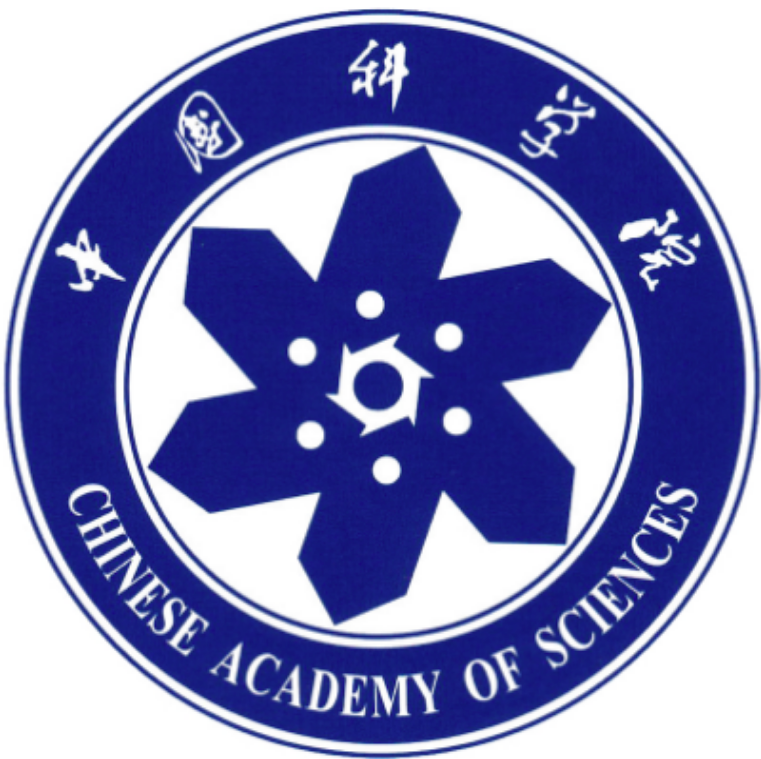
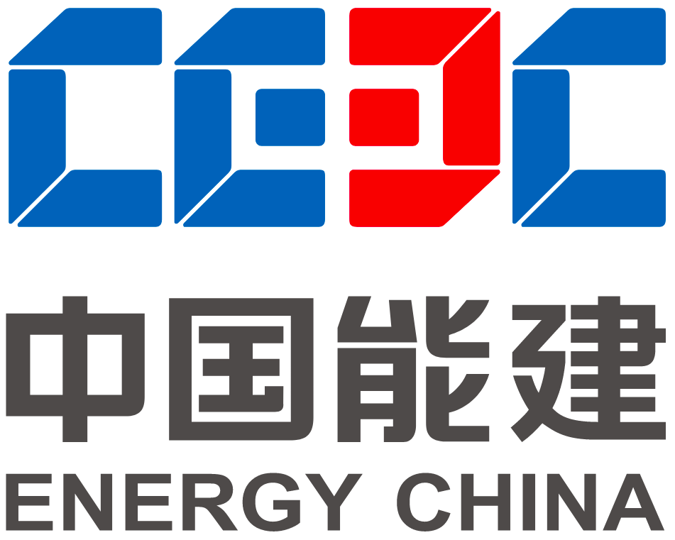
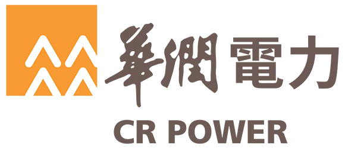
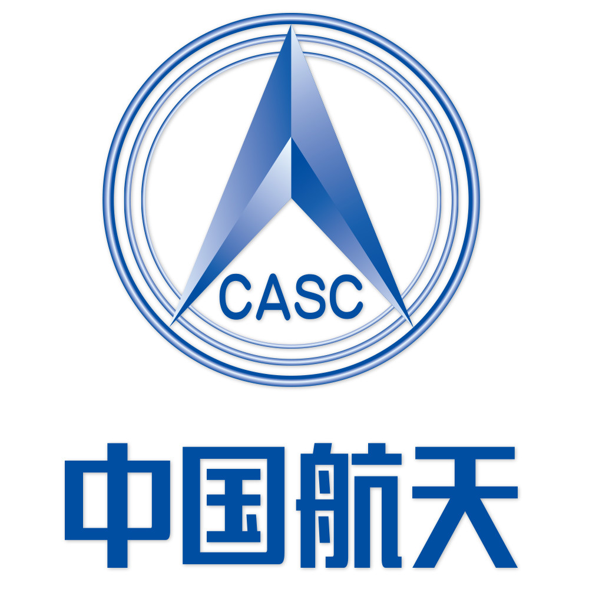

I am currently a first-year Ph.D. student in the Faculty of Engineering, National University of Singapore (NUS), and is advised by Prof Yunfeng Zhang .
Before this, I obtained Master’s degree in Mechanical Engineering from NUS in January 2020, being advised by Prof. Shuzhi Sam Ge and studying intelligent control
at NUS Control and Simulation Lab (CSL).
Before coming to NUS, I obtained Bachelor's degree in Mechanical Engineering and Automation from Northeastern University (NEU), China in June 2015. After graduating from NEU, I worked for
China Energy Engineering Group Co., Ltd. (CEEC) as an Design Engineer in Industrial Engineering
from August 2015 to July 2018. Here, I worked on Infrastructure Planning and Design (Field: Heat Recovery / Coal-fired / Gas-fired / Hydro Power Plant).
[Jan. 2021] Starting the Ph.D. student's academic career under the NUS Research Scholarship Funding, and being a Graduate Research Scholar at Micro-electromechanical System Lab (MSL), Department of Mechanical Engineering, Facualty of Engineering, NUS, Singapore.
[Feb. 2020] Being a Teaching Assistant for EE5106 and EE5064
at the Department of Electrical and Computer Engineering, NUS, Singapore.
[Jan. 2020] Being a Research Associate at Social Robotics Lab (SRL), Smart Systems Institute (SSI), NUS, Singapore.
And working on using machine learning algorithms to deal with the control optimization of robotic manipulator and the application of artificial intelligence technology (e.g. deep reinforcement learning, computer vision)
[May 2019] Starting research on Neural Networks and Automatic Control of Robotic Manipulators at Control and Simulation Laboratory (CSL), Department of Electrical and Computer Engineering, Facualty of Engineering, NUS, Singapore.
[Nov. 2014] Awarded the BAYI IRON & STEEL Scholarship of NEU.
[Oct. 2014] Awarded the Outstanding Student Scholarship of NEU (Second Class).
[Aug. 2011] Admitted to the B.Eng. Program in Mechanical Engineering and Automation at NEU, China.
Industry Experience

Jul. 2020 - Jan. 2021, Chinese Academy of Sciences (CAS) Shanghai Advanced Research Institute (SARI)
Research Engineer and Research Assistant in Aerospace

Jul. 2015 - Jul. 2018, China Energy Engineering Corporation (CEEC) East China Electric Power Equipment Company of CEEC
Design Engineer of Infrastructure Plan and Design
Assistant Engineer in Industrial Engineering
Research Experience
Jan. 2021 - Present, National University of Singapore (NUS) Micro-electromechanical System Lab (MSL)
Graduate Research Scholar
Jan. 2020 - Jun.2020, National University of Singapore (NUS) Smart Systems Institute (SSI)
Teaching Assistant (TA) and Research Assistant (RA)
May. 2019 - Jan.2020, National University of Singapore (NUS) Control and Simulation Lab (CSL)
Graduate Research Assistant
Jul. 2014 - Aug. 2014, Chinese Academy of Sciences (CAS) Changchun Institute of Optics, Fine Mechanics and Physics (CIOMP)
Research Intern (Undergraduate Researcher)
Education Background
Jan. 2021 - Present, National University of Singapore (NUS) Faculty of Engineering
Doctor of Philosophy (Ph.D.)
Dec. 2018 - Jan. 2020, National University of Singapore (NUS) Department of Mechanical Engineering
Master of Science (M.S.)
Aug. 2011 - Jun. 2015, Northeastern University, China (NEU) Majoring in Mechanical Engineering and Automation
Bachelor of Engineering (B.Eng.)
Research Interest
My research interest includes deep reinforcement learning, smart manufacturing, robotic manipulator control and multi-agent system,
the research area of which involves control science, computer engineering, mechanical engineering, electrical engineering and software engineering.
In this paper, adaptive neural network control is studied for an Airborne Robotic Manipulator (ARM) system.
To handle the uncertainties and disturbances of the ARM system and improve its robustness,
radial basis function neural network (RBFNN) is used for approximating unknown dynamics model of the system to realize better adaptive neural network control.
The proposed RBFNN-based control scheme is used for approximating errors, which can be effective in making learning objective smaller and learning time shorter compared with conventional approaches.
The trajectory tracking problem of the manipulator is investigated by a simpler design adaptive neural network (NN) in this paper.
The output feedback control is considered when the velocity information cannot be obtained.
The weights of Radial Basis Function NN converge to its optimal value by using the auxiliary filter to estimate weights error.
Projects
Active:
Intelligent ManufacturingProject work coming up soon!
Completed:
Power Field
Project of Xiangtan Converter Station with Phase Modulation Units for China State Grid
Xiangtan, Hunan Province, China
Responsibility: Coordination design of the separated-phase circuit of the Phase Modulation Units (2 × 300MVAr) .
Project of Jiuquan Converter Station with Phase Modulation Units for China State Grid
Jiuquan, Gansu Province, China
Responsibility: Preliminary design of excitation circuit of the Phase Modulation Units (2 × 300MVAr).
Renovation Project of Shiquan Hydro Power Plant for China Datang Corporation
Ankang, Shaanxi Province, China
Responsibility: Doing engineering design for the technical transformation project to achieve capacity expansion, and conducting site survey at the Hydro Power Plant (HPP) near the Hanjiang River
to ensure the accuracy of design parameters and confirm the electrical parameters of the electrical equipment (provided by ABB).

Project of Jinzhou Power Plant with Ultra-supercritical Generating Units for China Resources Co., Ltd.
Jinzhou, Liaoning Province, China
Responsibility: Designing in-plant transmission circuit system transferring electricity to satisfy the internal demand of the plant.
The in-plant transmission circuit system contains the auxiliary circuit, backup interconnection circuit, excitation circuit and electrical interface in the ultra-supercritical coal-fired generating units (2 × 660MW).
Considering abrasion of the generator carbon brush after long-time running, a phase sequence switching structure was specially designed, which can change the positive and negative poles of the circuit in a certain period.
Aerospace Field

Cooperation with Shanghai Academy of Spaceflight Technology (SAST)Project work coming up soon!
Cooperation with China Academy of Launch Vehicle Technology (CALT)Project work coming up soon!
Other Industrial Projects:
Project of Heat Recovery Power Plant for Coal-to-oil Chemical Base of Yitai Group
Ordos, Inner Mongolia Autonomous Region, China
Responsibility: Designing the electrical circuit system of the generating units (#2 – #6) as well as the interfaces connecting the generators to other electrical equipment (provided by SIEMENS).
Project of Coal-fired Steam Power Plant for Aluminum Electronics Industrial Park
Hezhou, Guangxi Autonomous Region, China
Responsibility: Designing Isolated Phase Circuit system（①20kV, 16000A; ②20kV, 2000A）applied to the Coal-fired Steam Power Plant supercritical units (2 × 330MW).
Renovation Project of Captive Thermal Power Plant for Juhua Group Co., Ltd.
Quzhou, Zhejiang Province, China
Responsibility: Coordination design of the expansion project for 6.3kV starting & standby transformers.
Cogeneration Project of Juxian Fengyuan Thermal Power Plant with Gas Turbine Units
Rizhao, Shandong Province, China
Responsibility: Coordination design of separated-phase circuits for the Gas Turbine Units (2 × 350MW).